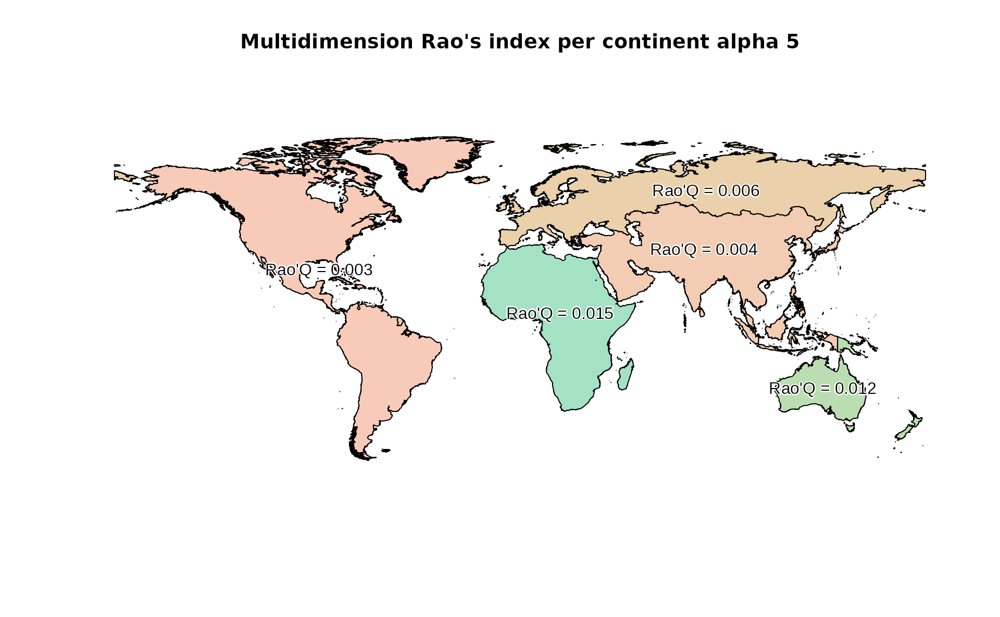

Area-based Rao's index.
Matteo Marcantonio
2022-09-18
Source:vignettes/rasterdiv_area_based_Rao.Rmd
rasterdiv_area_based_Rao.RmdThis vignette uses rasterdiv to derive classic and multidimension area-based Rao’s index from an input vector layer and multiple raster layers.
Overview
A RasterLayer called copNDVI is loaded together with the package rasterdiv. copNDVI is a 8-bit raster, meaning that pixel values range from 0 to 255. You could stretch it to match a more familiar (-1,1) values range using raster::stretch(copNDVI,minv=-1,maxv=1) .
Reclassify NDVI
Pixels with values 253, 254 and 255 (water) will be set as NA’s.
copNDVI <- raster::reclassify(copNDVI, cbind(252,255, NA), right=TRUE)Resample NDVI to a coarser resolution
To speed up the calculation, the RasterLayer will be “resampled” at a resolution 10 times coarser than original and cut on Africa.
#Resample using raster::aggregate and a linear factor of 10
copNDVIlr <- raster::aggregate(copNDVI, fact=10)
#Set float numbers as integers to further speed up the calculation
storage.mode(copNDVIlr[]) = "integer"Compute multidimension area-based Rao’s Index
# The second layers is NDVI/100 (just as an example)
RaoMC <- paRao(x=stack(copNDVIlr,copNDVIlr/2), area=world, field='CONTINENT', alpha=5, method="multidimension", simplify=1)
#Plot area-based RAo's index
plot(RaoMC, col=hcl(RaoMC$alpha.5*10000), main="Multidimension Rao's index per continent alpha 5")
text(RaoMC, label=paste("Rao'Q =", round(RaoMC$alpha.5,3)), col="black", family="Arial", halo=TRUE)